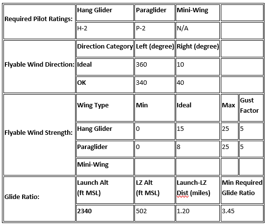
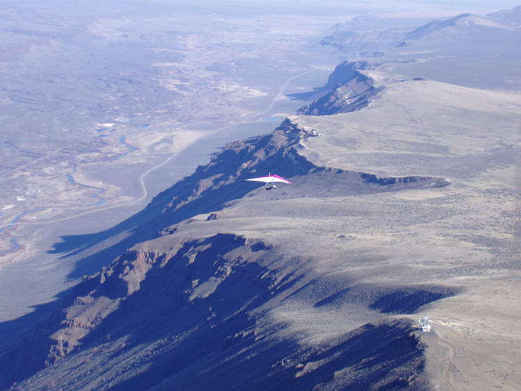
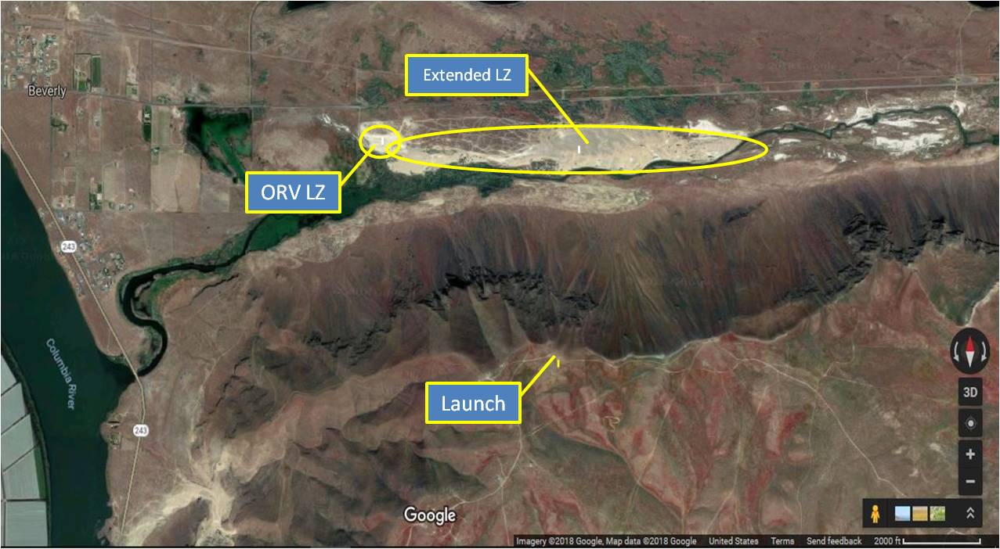
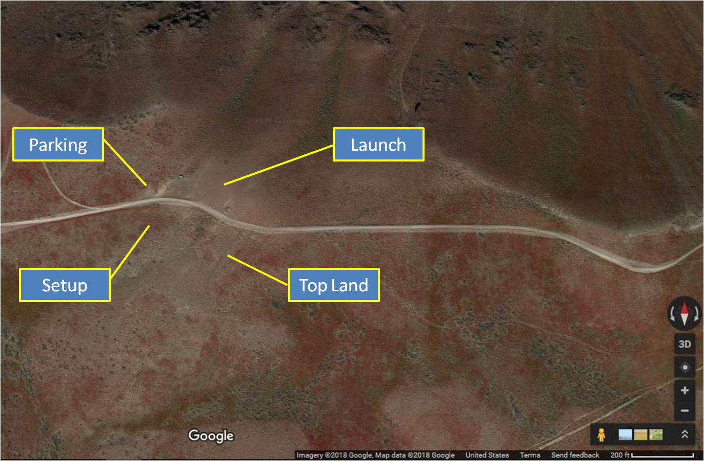
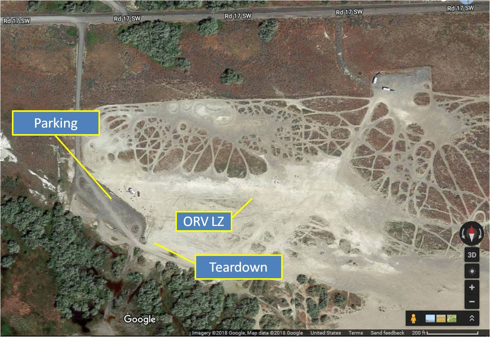

Saddle Mountain
Last updated 02/01/2023 (from the club's previous website)
Current Conditions (Weather & Cam), approx. 1/4 mile west of launch
Saddle Mt., located near Mattawa, is a great winter ridge soaring site that works with a N-NNE wind when few other sites are flyable. It’s also common for skilled pilots who are comfortable with top landing to make several flights in a day without having to break down their glider.
WARNING: THIS IS A DESERT SITE. As such, extreme mid-day air is common when thermic conditions exist. Assess the current and likely future conditions and get pre-flight advice from pilots who have flown the site before setting up and/or launching.





Protocol
USHPA membership required. Suitable for novice or higher rated pilots in appropriate conditions. Any instruction or tandem activity must comply with current USHPA rules.
Flying Season
Spring, Fall, Summer, Winter.
Access
2WD, dirt and gravel public road that passes through public land and private easements. Road is rough in places and also crosses through the BLM Saddle Mountains OHV area. Fast-moving motorcycles and off-road vehicles may be encountered at any time.
Site Details
| Launch Elevation | 2340 MSL (46.8174, -119.8771) |
|---|---|
| Launch Type | Unimproved desert slope (sand, gravel, sage, rocks) |
| Obstructions | None |
| Faces | N |
| Minimum Glide Ratio from Launch to LZ | 3.4 |
| Soarable | Yes, round trip |
| LZ Elevation | 500 MSL (46.8300, -119.8935) |
| LZ Type | Sand and sage |
| LZ Obstructions | Brush, 4-wheelers |
| Notes | The launch / top-land area is privately owned, but CBCC has a land use agreement that allows USHPA members access to the property to fly. There is a fee for this privilege; anyone who flies at Saddle is encouraged to donate to the site fund. |
This site is usually flown as a ridge site in moderate north winds in the fall, winter and spring. It is possible to fly the site during thermic conditions and in the summer, but since this is a desert site, thermals can be sharp and strong, making the flying experience less than pleasant and potentially extremely dangerous for newer pilots.
When top landing, landing south of the road behind launch with a right-turn approach from east of launch is the preferred choice. Due to the geography, pilots are likely to find much cleaner air during normal ridge conditions than with a left-turn approach from the west, which is susceptible to rotor in most flyable conditions. It is also advisable to place temporary streamers (take them with you when you're done) in your intended top-land area, as conditions behind the face of the ridge can vary substantially depending on wind strength. Please park west of launch and in or west of the noted parking area.
The LZ area is managed by WA State Department of Natural Resources as an ORV park. DNR has expressly requested that when we use the area as an LZ, we NOT hang streamers from bushes, trees, fence posts, kiosks, etc., and that we remove all streamers at the end of the day. DNR considers streamers at the site to be trash they need to pick up, creating extra work. Please bring your own poles / wind indicators, plant them where they're not in the way of other users, and leave the LZ cleaner than you found it! A good relationship with DNR helps us keep other sites in the Ranger District (like Chelan) open as well.
When the park is open and in use by the public in its primary capacity as an ORV park, you have acres of unobstructed sand to land on. Please use the open space, land far away from any activity, and walk your wing back to the parking area.
Additional Notes: Long turn-around to/from launch. Beware going cross-country to the south and west; both Hanford and the Yakima Firing Range are restricted. There are scheduled military training routes in this area. Be sure to call Whidbey Naval Air Operations at (800) 360-3050 or (360) 257-2877. Tell them you are a citizen pilot flying a hg/pg checking on scheduled flights on VR 1350 and IR 329 MTRs. Also call McChord Air Force Base Operations (253) 982-2635 for IR 329. Even if there are no scheduled flights, it is possible to encounter unscheduled low altitude activity near launch.
Please contribute to Saddle Mountain
Our annual land-use fee for Saddle is $1,200, due every March. Please consider joining CBCC or supporting the site via a donation.
Only launch within your rating and skill levels; when in doubt, don't set up or launch.
If you're in the air and the sky starts to look threatening, get out of the air immediately. Also be aware of nearby terrain and potential for rotor. (Yes, this is common-sense H1/P1 stuff, but it's here for a reason.)
All incidents should be documented via the current USHPA incident reporting protocols, with a courtesy copy to the site contact. Any incident involving non-pilot property damage, injuries, or assistance from non-pilots (EMS, police, public bystanders, etc.) must also be reported as soon as practical to the site contact.
In an emergency, call 9-1-1 first.